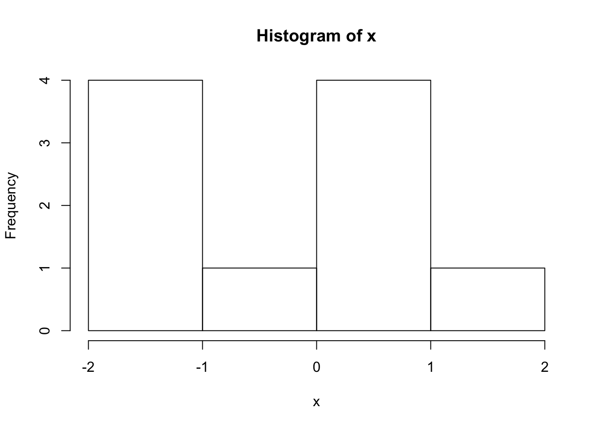
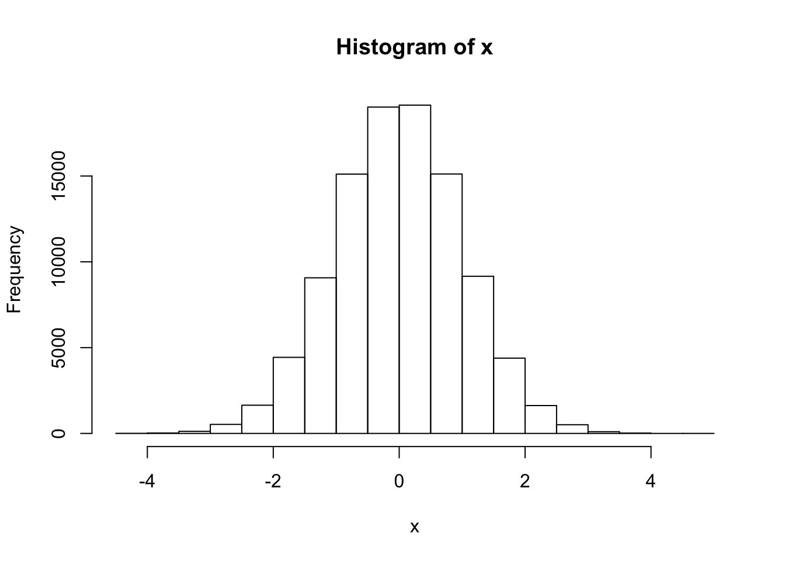
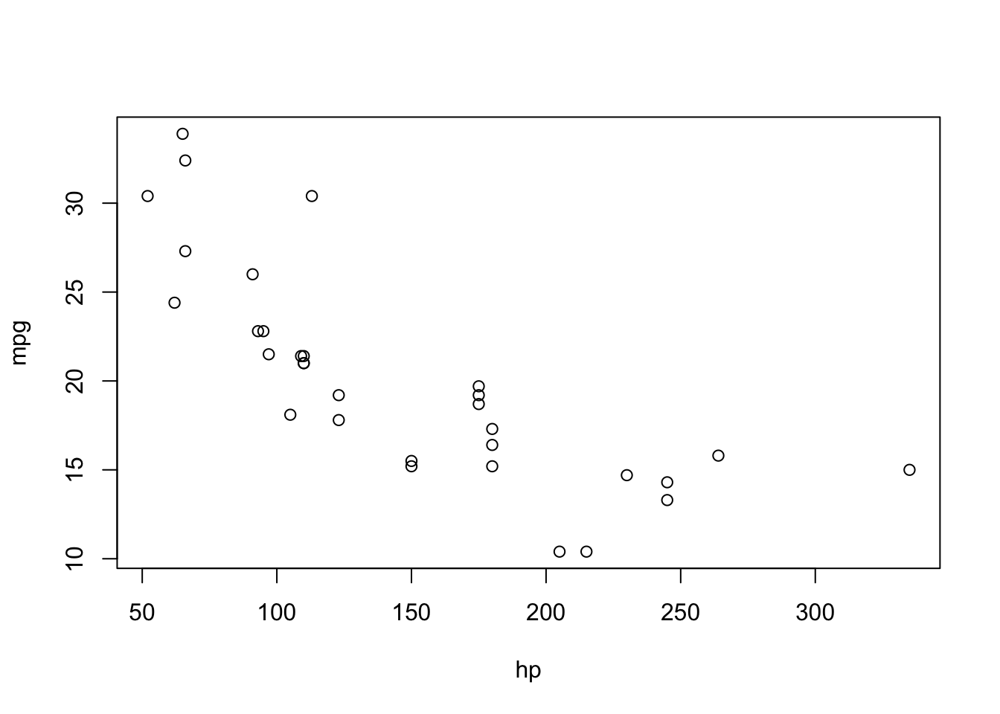
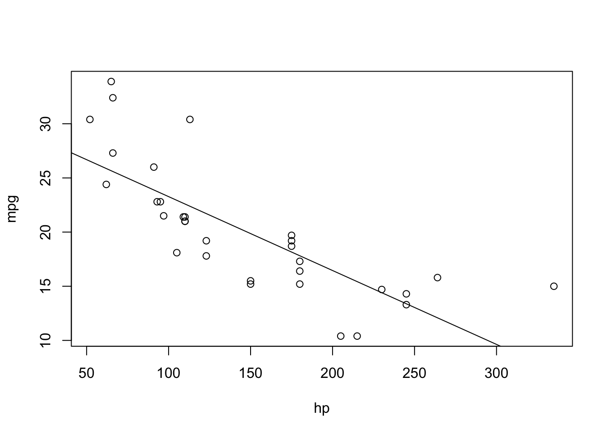

\[\phi (x) = \frac{e^{-\frac{1}{2}x^2}}{\sqrt{2\pi}}\]
We can also run R code directly in Rstudio and incorporate our results into our web page. For example, let’s get a sample of ten observations from the distribution above. We can get a sample using the rnorm() function in R.
x <- rnorm(10)
x## [1] -0.1283175 -1.4958925 0.1262202 -1.6744694 0.5698548 1.7443347
## [7] -1.6154073 0.6414506 0.2597063 -1.9294877# let's see the histogram
hist(x)
mean(x)## [1] -0.3502008Notice that it is hard to see that the sample comes from a standard normal distribution. Let’s try a larger sample.
x <- rnorm(100000)
hist(x)
mean(x)## [1] -0.002006482…that’s more like it.
Since we are developing our website in Rstudio we can also carryout our data analysis right here. Let’s examine the mtcars dataset that is comes with R. first let’s look at the structure of the dataset. mtcars documentation
data(mtcars)
str(mtcars)## 'data.frame': 32 obs. of 11 variables:
## $ mpg : num 21 21 22.8 21.4 18.7 18.1 14.3 24.4 22.8 19.2 ...
## $ cyl : num 6 6 4 6 8 6 8 4 4 6 ...
## $ disp: num 160 160 108 258 360 ...
## $ hp : num 110 110 93 110 175 105 245 62 95 123 ...
## $ drat: num 3.9 3.9 3.85 3.08 3.15 2.76 3.21 3.69 3.92 3.92 ...
## $ wt : num 2.62 2.88 2.32 3.21 3.44 ...
## $ qsec: num 16.5 17 18.6 19.4 17 ...
## $ vs : num 0 0 1 1 0 1 0 1 1 1 ...
## $ am : num 1 1 1 0 0 0 0 0 0 0 ...
## $ gear: num 4 4 4 3 3 3 3 4 4 4 ...
## $ carb: num 4 4 1 1 2 1 4 2 2 4 ...From the documentation, we can see that hp is for horsepower and mpg is for miles per gallon. Let’s plot these two.
plot(mpg~hp, data = mtcars)
It looks as though milage decreases as horsepower increase, which is expected.
lm_mpg_hp <- lm(mpg~hp, data = mtcars)
summary(lm_mpg_hp)##
## Call:
## lm(formula = mpg ~ hp, data = mtcars)
##
## Residuals:
## Min 1Q Median 3Q Max
## -5.7121 -2.1122 -0.8854 1.5819 8.2360
##
## Coefficients:
## Estimate Std. Error t value Pr(>|t|)
## (Intercept) 30.09886 1.63392 18.421 < 2e-16 ***
## hp -0.06823 0.01012 -6.742 1.79e-07 ***
## ---
## Signif. codes: 0 '***' 0.001 '**' 0.01 '*' 0.05 '.' 0.1 ' ' 1
##
## Residual standard error: 3.863 on 30 degrees of freedom
## Multiple R-squared: 0.6024, Adjusted R-squared: 0.5892
## F-statistic: 45.46 on 1 and 30 DF, p-value: 1.788e-07Let’s see how the plot looks with a regression line.
plot(mpg~hp, data = mtcars)
abline(lm_mpg_hp)
What are the line’s coefficients?
knitr::kable(as.data.frame(lm_mpg_hp$coefficients))| lm_mpg_hp$coefficients | |
|---|---|
| (Intercept) | 30.0988605 |
| hp | -0.0682283 |
Notice that I can output tables in R and convert them into html tables using knitr::kable().